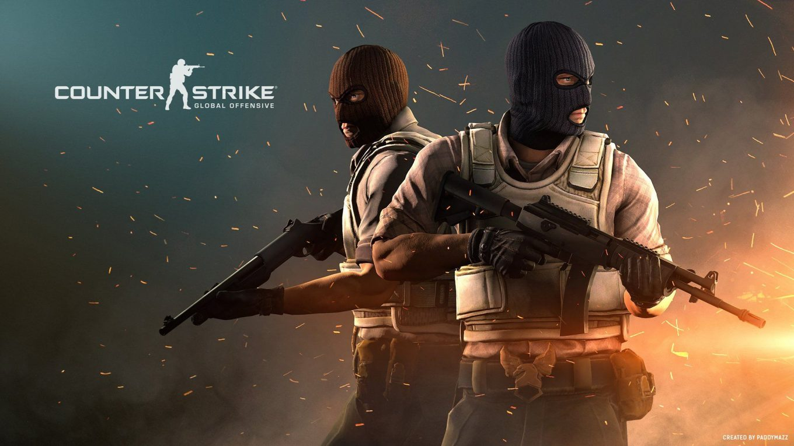
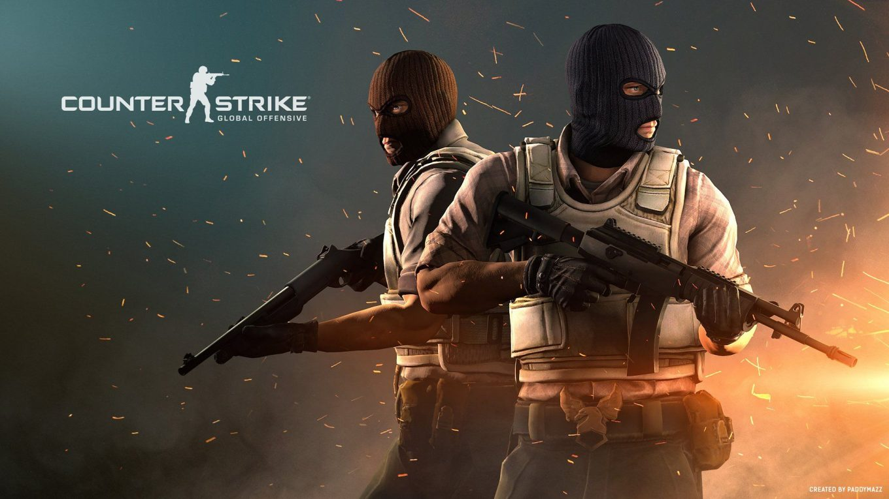
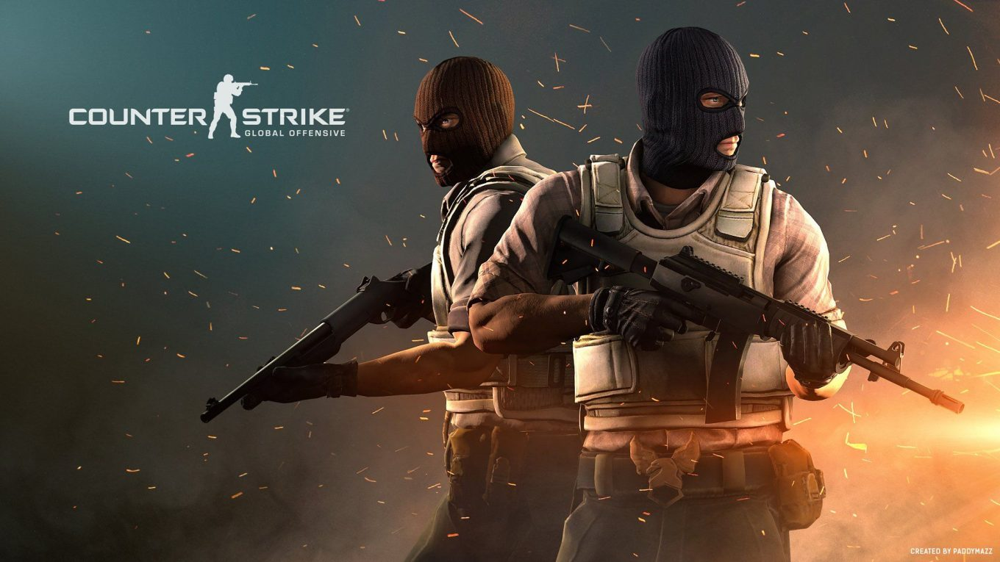

Counter-Strike: Global Offensive (CS:GO) ist ein teambasiertes taktisches First-Person-Shooter-Spiel, das von Valve Corporation entwickelt und veröffentlicht wurde. Es ist die vierte Hauptausgabe der Counter-Strike-Reihe und hat sich zu einem der beliebtesten E-Sport-Spiele weltweit entwickelt. CS:GO bietet intensive Gefechte zwischen zwei Teams, den Terroristen (T) und den Counter-Terroristen (CT), die in verschiedenen Spielmodi wie "Bomb Defusal", "Hostage Rescue" und "Deathmatch" gegeneinander antreten.
Die Programmierung von CS:GO umfasst eine Vielzahl von Aspekten, die dazu beitragen, ein reibungsloses Spielerlebnis zu gewährleisten und die komplexe Dynamik des Spiels zu ermöglichen:
Game Engine: CS:GO basiert auf der Source Engine von Valve, die eine robuste Grundlage für die Entwicklung von Ego-Shooter-Spielen bietet. Die Engine unterstützt fortschrittliche Grafiken, Physik, Animationen und Netzwerkfunktionen.
Netzwerk-Code: Die Programmierung des Netzwerk-Codes ist entscheidend für CS:GO, da das Spiel stark auf Online-Mehrspielermodi ausgerichtet ist. Es werden fortschrittliche Netzwerkprotokolle und Algorithmen verwendet, um Latenzzeiten zu minimieren, eine reibungslose Synchronisierung zwischen den Clients sicherzustellen und Cheating-Versuche zu erkennen und zu bekämpfen.
Physik-Engine: Die Source Engine verfügt über eine leistungsfähige Physik-Engine, die realistische Interaktionen zwischen Objekten, Granaten, Projektile und Spielern ermöglicht. Dies trägt zur taktischen Tiefe des Spiels bei, da Spieler Physik-basierte Manöver wie das Ausnutzen von Sprung- und Wurfphysik für taktische Vorteile nutzen können.
Künstliche Intelligenz (KI): Während die KI in CS:GO hauptsächlich auf einfache Muster für computergesteuerte Gegner (Bots) beschränkt ist, erfordert die Programmierung dennoch effiziente Algorithmen, um das Verhalten der Bots in verschiedenen Situationen zu steuern und ein herausforderndes Spielerlebnis zu bieten.
Spielmodi und Regelsetzung: Die Programmierung umfasst die Implementierung verschiedener Spielmodi wie "Bomb Defusal", "Hostage Rescue" und "Deathmatch", sowie die Regelsetzung für Rundenzeit, Waffenbalance, Geldsystem und andere Gameplay-Elemente.
Anti-Cheat-Systeme: CS:GO hat ein ausgeklügeltes Anti-Cheat-System, das ständig aktualisiert und verbessert wird, um Cheating und unfaire Spielpraktiken zu bekämpfen. Die Programmierung umfasst die Implementierung von Algorithmen zur Erkennung von Cheating-Software und die Durchführung von Maßnahmen gegen betrügerische Spieler.
Community-Unterstützung: Valve hat eine aktive Community von Spielern und Entwicklern, die Mods, Karten, Skins und andere Inhalte für CS:GO erstellen. Die Programmierung umfasst die Unterstützung und Integration dieser Community-generierten Inhalte in das Spiel.
Insgesamt erfordert die Programmierung von CS:GO ein tiefgreifendes Verständnis von Ego-Shooter-Spielen, Netzwerktechnologie, Spielphysik, künstlicher Intelligenz und Anti-Cheat-Maßnahmen, um ein fesselndes und fair ausgewogenes Spielerlebnis zu schaffen.
Website Steam
